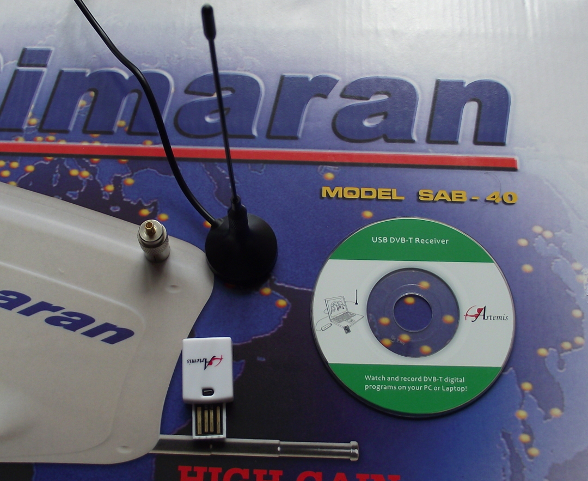
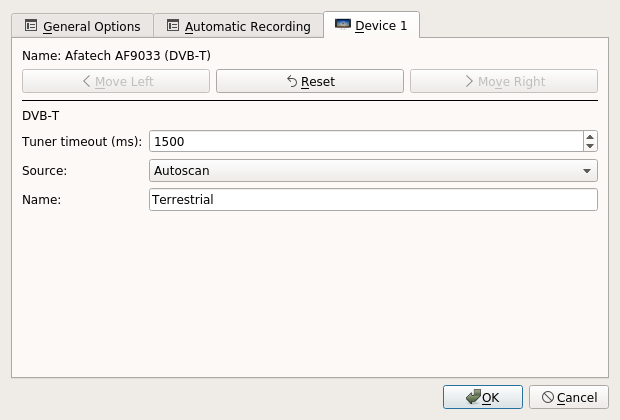
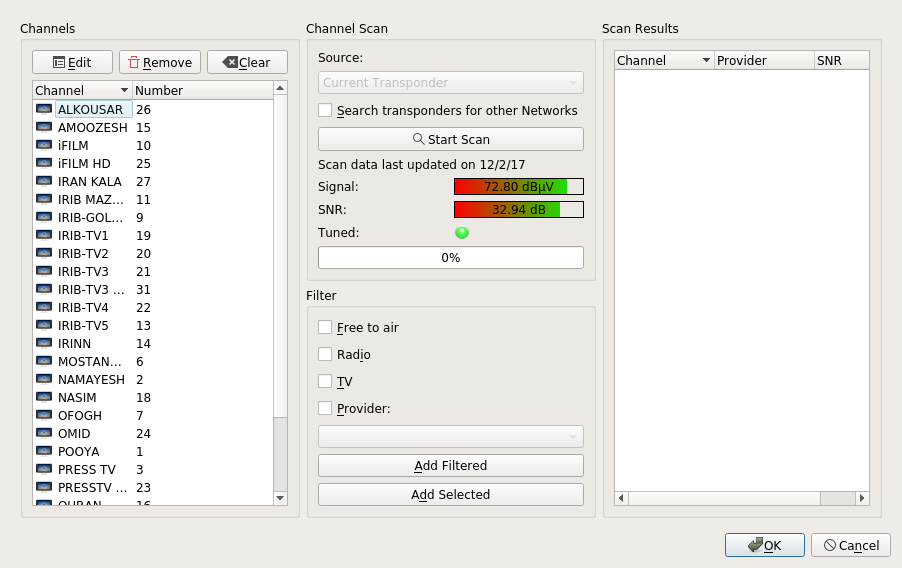

مدتها بود که دنبال یک گیرنده دیجیتال بودم تا بتوانم بر روی دبیان تلویزیون نگاه کنم و برنامههای جالب شبکه مستند را ضبط کنم. با کلی جستجو در گوگل و فروشگاههای آنلاین برای کسب اطلاعات و خرید یک گیرنده دیجیتال بالاخره موفق به خرید از دیجیکالا نشدم و این محصول حالا به هر دلیلی تا زمان خرید بنده عرضه نشد، تا این که در حین گردش در بازار کامپیوتر و قطعات سختافزاری موفق به خرید یک گیرنده دیجیتال یا (DVB-T)، محصول شرکت آرتمیس شدم:

در مدتی که در حال جستجو و مطالعه دربارهی گیرندههای دیجیتال و نصب آنها بودم، اطلاعات خوب و مفیدی از نحوه نصب این دستگاهها به دست آورده بودم اما با این حال هر دستگاه معمولا فرمورهای و درایور خاص خود را پشتیبانی میکنند و به همین دلیل به نظرم آمد که کارم سخت شده، با این حال این گیرنده همراه خود سیدی درایورها و ابزارهای خود را در بستهبندی داشت و معمولا شرکتها از ویندوز به عنوان محبوبترین سیستمعامل پشتیبانی میکنند اما در کمال تعجب دیدم که دایرکتوری لینوکس در محتویات این سیدی وجود داشت که در آن کد منبع درایور و همینطور فرمور این گیرنده وجود داشت و نیاز به کامپایل داشت:

اما نگران نباشید، نام سختافزار این گیرنده ITE9135 میباشد و فرمور مورد نیاز آن در بستهی firmware-misc-nonfree میباشد که با اجرای دستور زیر میتوانید آن را نصب کنید :
sudo apt install firmware-misc-nonfree
و همانطور که میبینید، این بسته جزوی از مخزن غیر آزاد یا nonfree در مخازن دبیان است و شما میبایست در فایل /etc/source.list خود این کامپوننت را اضافه کنید و پس از نصب سیستم خود را برای بارگذاری فرمورها ریاستارت کنید.
در کنار دستگاه گیرنده، محتوایت دیگر از جمله آنتن همراه و کنترل از راه دور که در عکس نیست و به همراه یک مبدل سیم کواکسیال وجود داشت:


در تهران یا شهرهایی چون مشهد شاید، اما در مازندران نمیشود از آنتن کوچک همراه دستگاه استفاده کرد چرا که سیگنال آنتنهای فرستنده آنچنان قدرتمند نیست و به همین دلیل آنتنی هوایی باید خرید و من هم آنتن سیماران را انتخاب کردم چرا که ابزارهای مورد نیاز از جمله بوستر تقویت کننده سیگنال را هم به همراه داشت:
پس از نصب آنتن هوایی و اتصال سیمها به بوستر و نصب فیش سیم کواکسیال به مبدل گیرنده دیجیتال، کارهای سختافزاریام به پایان رسید. حال برای تایید درستی کارکرد گیرنده دیجیتال و قبل از اتصال usb به پورت سیستم خود میتوانید با اجرای دستور زیر از اتصال موفقیت آمیز گیرنده و شناسایی آن توسط دستگاه مطمئن شوید:
sudo tail -f /var/log/syslog
حال با اتصال گیرنده به پورت usb، متوجه پیامی در خروجی ترمینال خود میشوید:

در این مرحله نیاز به نصب یک کلاینت داریم تا بتوانیم شبکهها را جستجو کرده و لیست کانالهای تلویزیونی را ذخیره و برنامهها را مشاهده کنیم. برای جستجو یا لیست کردن ابزارهای تحت ترمینال وجود دارد و همینطور برنامههای گرافیکی مختلف اما انتخاب من برنامهی کافئین ( Kaffeine ) هست.
sudo apt install kaffeine
پس از نصب برنامه را اجرا کنید و به مسیر زیر در منوی اصلی بالای برنامه بروید:
Television > Configure Television ... > Device 1
سپس به شکل زیر میتوانیم تنظیم کنید:

و بر روی دکمه ok کلیک کنید. حال وقت آن رسیده که برای جستوجوی کانالها اقدام کنیم و باید به مسیر زیر رفت:
Television > Channels

حال بر روی دکمه Start Scan کلیک کنید تا کانالهای تلویزیونی را جستجو کند اما در عکس بالا میبینید که من اسکن کردم و لیست کانالها را شخصیسازی کرده و ذخیره کردم. حال کار ما تمام شده و با کلیک بر روی اسم کانالها این شبکههای تلویزیونی را به صورت یک جریان زنده بر روی سیستم لینوکس خود تماشا کنید :

در این قسمت هم برای مطالعه و یا جستجوی بیشتر لینکهای مشابه از وبلاگهای دیگر دوستان گیکی و ویکیهای لینوکس قرار میدهم تا هم تشکری به تلاش دوستان عزیز باشد و هم کمک افزایش دانش خواننده علاقمند بلاگم:
مطالب مشابه دوستان گیکی:
- ده گام تا راه اندازی گیرنده دیجیتالی ایکسویژن … | گیک آزاد
- تماشای تلویزیون با استاندارد DVB-T در لینوکس
منابع ویکیهای لینوکس:
در پایان هم خیلی علاقهمند هستم تا نظرات و بازخوردهای شما خوانندههای عزیز را در مورد این مطلب و چه اصلاح یا چه در مورد کمکی که بهتون در حل مشکلی کرد بدانم پس از این به بعد را شما شروع کنین: